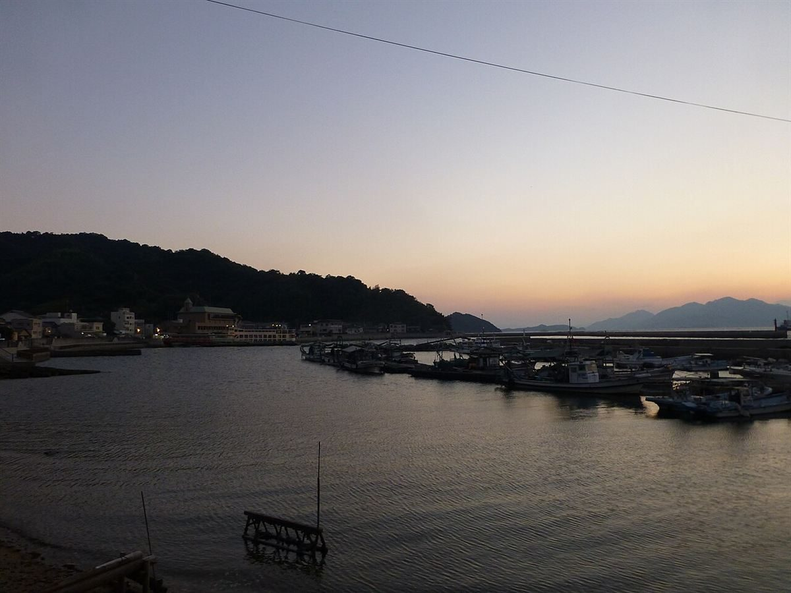
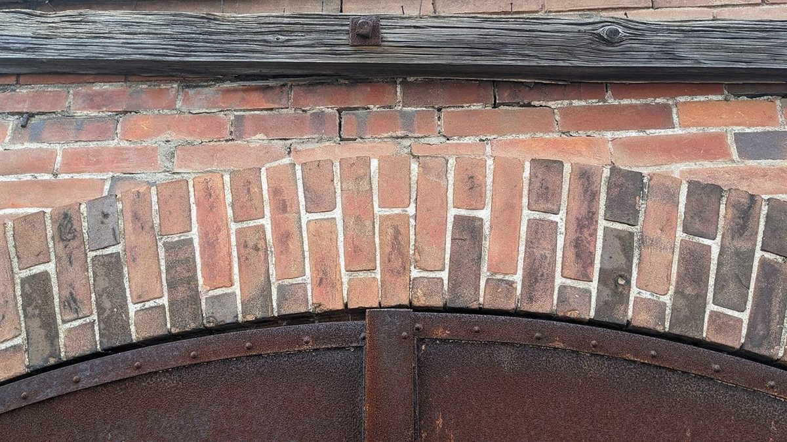
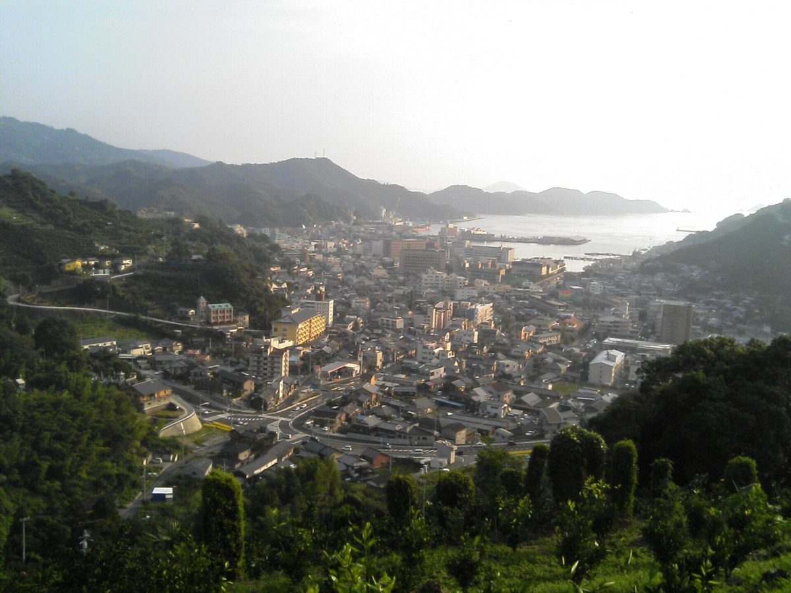
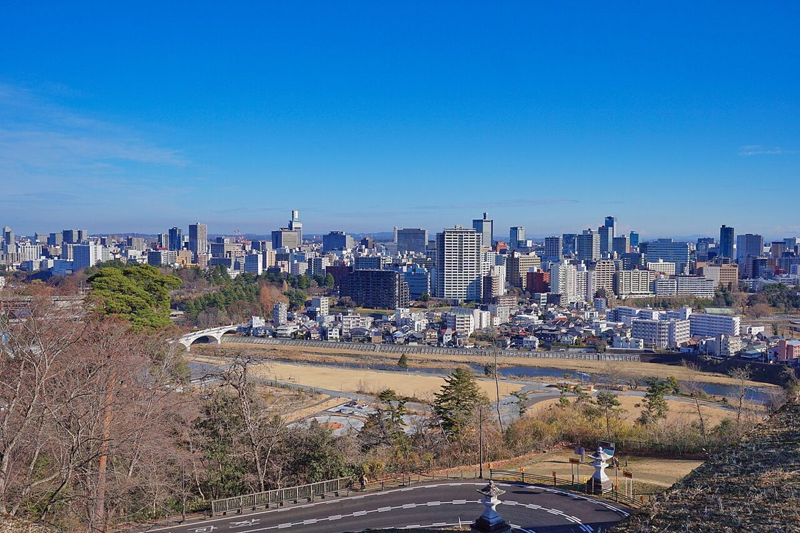
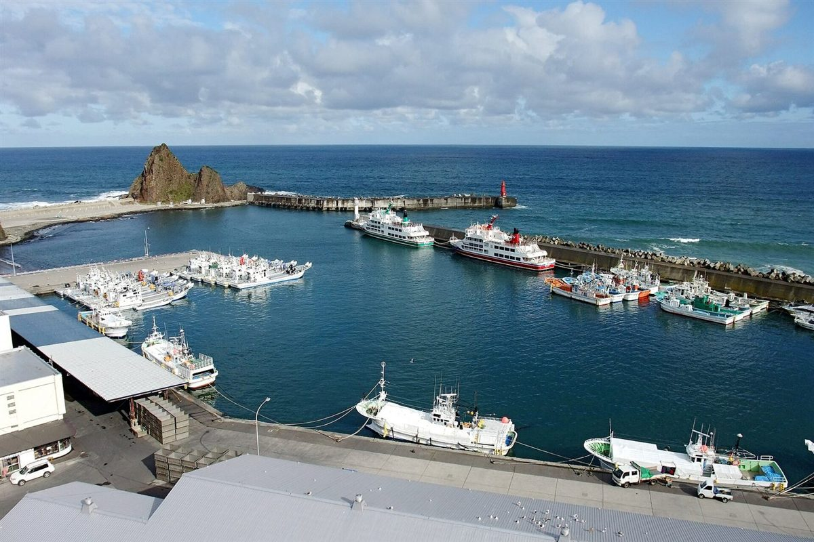

Ishinomaki / Tatemachi
バレルBARREL
宮城県石巻市立町にある小売のお店です。屋号の「バレル(樽)」から、板を組み合わせて輪で締める樽の姿を連想し、このサンプルのデザインに映しました。
取扱商品や営業時間は準備中です。まずはお電話かInstagramからお気軽にどうぞ。





Store Ledger
店の台帳
- 店名
- バレル
- 業種
- 小売
- 所在地
- 宮城県石巻市立町1丁目7-1(〒986-0824)
- 電話
- 0225-22-1249
- @barrel1965
- 営業時間
- 準備中
- 定休日
- 準備中
営業時間・定休日はご確認のうえ掲載します。お出かけ前にお電話でご確認ください。
Why Barrel
屋号に重ねる、三つの輪
樽は、細い板を鉄の輪でぎゅっと締めて形になります。このサイトでは、その「輪」を店の三つの約束として見立てました。
- 見つけやすい。立町の通りに構える、町なかの小売店です。
- 相談しやすい。探しものは、お電話やInstagramからどうぞ。
- 長く続く。Instagramのアカウント名に「1965」の数字があり、長い歴史を想像させます(詳細は準備中)。
上記は試作ページの構成案です。実際の内容は店主さまへの取材後に差し替えます。

宮城県仙台市の風景(イメージ。石巻の写真ではありません)

Port Town